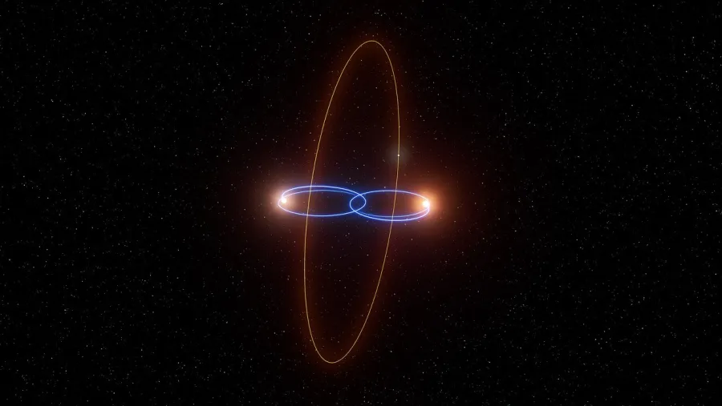

April 16, 2025
2M1510 (AB) b: a planet on a polar orbit around two brown dwarfs
The planet 2M1510 (AB) b orbits two young brown dwarfs on a path roughly perpendicular to the plane in which they orbit each other. It is the first strong evidence for such a "polar" planet around a binary.
The planet itself was not seen. Using the UVES spectrograph on ESO's Very Large Telescope, a team led by Thomas Baycroft noticed that the orbit of the two brown dwarfs changes in an unusual way. After other explanations had been examined, only a planet on a polar orbit remained. The two dwarfs eclipse each other; such a pair is known for only the second time.
Source: ESO: "“Big surprise”: astronomers find planet in perpendicular orbit around pair of stars", 2025-04-16